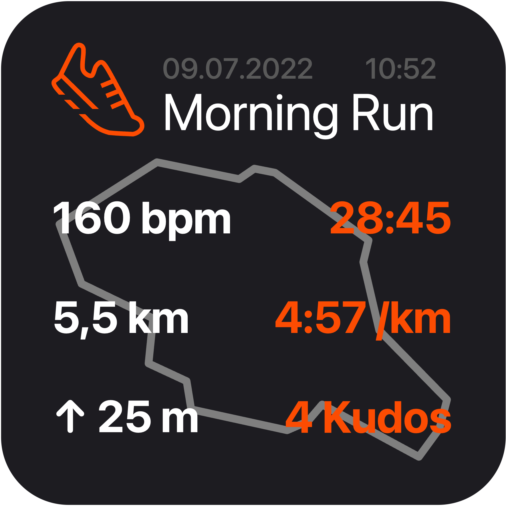

Scriptable widget for Strava

Overview
This is a widget based on the Scriptable framework for IOS. It displays the last completed Strava activity including relevant metrics and a small map
Until now, the following workout types are supported:
- Bike rides
- Runs
How to get started?
- Enable API connection for your Strava-Account here
- Download the UpdateScript.js and replace ClientID and ClientSecret with the information from your API-Client:
// API config
const clientID = ''; // <-- Client ID from Strava API goes here
const clientSecret = ''; // <-- Client secret from Strava API goes here - Execute the "UpdateScript_example.js" within the Scriptable-App (this downloads the actual widget script)
- Execute the Scriptable-Widget-for-Strava script within the Scriptable-App once to initiate the widget-setup
- Follow the steps from the setup and enjoy :)
For more information about the Strava API see the Official Strava API Documentation